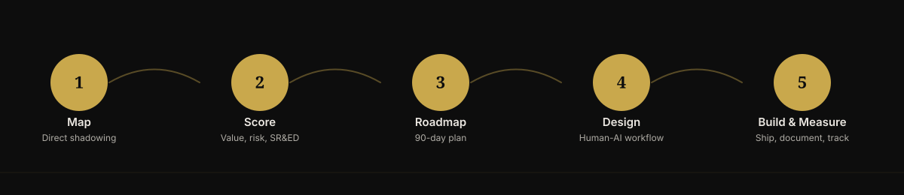

AI Workflow Audit
Find the drag AI could fix, and prove it before you commit.
We audit your highest-friction workflows, quantify the hidden operational drag, and redesign them around human-AI collaboration, using the same operating model Nether Labs runs on internally: a documented, 30+ agent org with a chain of command, institutional memory, and standard operating procedures, running daily.
The Opportunity
Canadian businesses are moving on AI. Most are not redesigning around it.
Production use of AI among Canadian businesses doubled year over year, and is now just above 1 in 10 (Statistics Canada, Canadian Survey on Business Conditions, 2025). Nearly all SMEs are investing in digital technology, but only 30% use generative AI. And BDC frames the size of the resulting gap at roughly $350B in unrealized GDP growth if Canadian SMEs closed the AI maturity gap (BDC, "The Digital Transformation of SMEs in the Age of AI," June 2026).
The pattern: most businesses are experimenting with AI tools, not redesigning workflows around them. That gap between individual tool use and governed, measured, org-level workflow change is where value is being lost, and where an audit gets paid.
The Wedge
The proof is not a case study we bought. It's us.
We do not sell generic AI consulting, training, or a big-firm transformation program. We audit a client's highest-friction workflows, quantify the hidden operational drag, and redesign them around human-AI collaboration. Delivered by the same agent org that has been running Nether Labs itself, daily, for four months. That is not marketing copy. It is the product being demonstrated on the seller.

Methodology
Five steps.
Human judgment, agent volume. Direct shadowing, not a survey.
Methodology
Five steps. Human judgment, agent volume.

Map
Current-state workflows through direct shadowing, not a survey.
Score
Opportunities ranked by value, feasibility, risk (including privacy), and SR&ED potential.
Roadmap
A 90-day plan presented alongside the first sprint proposal.
Design
The future-state workflow, built around human-AI collaboration with Canadian data handling as a constraint from the start, not a retrofit.
Build, launch, measure
One production workflow shipped, trained on, and documented, including the eligible activities and SOPs.
Common Questions
Before you request a diagnostic.
How is this different from generic AI consulting?
We don't sell training decks or a big-firm transformation program. We audit your highest-friction workflows, quantify the drag, and ship one production workflow — using the same 30+ agent operating model that runs Nether Labs itself, daily.
What happens during the Map step?
Direct shadowing of your actual workflows — not a survey, not a workshop. We observe where time and money are leaking before proposing anything.
How is Canadian data handling addressed?
As a design constraint from the start, not a retrofit. Every engagement addresses PIPEDA accountability, Quebec's Law 25 where applicable, and a Canadian data residency preference with human review gates on higher-stakes output.
What do I get at the end of the engagement?
A 90-day roadmap, a first sprint proposal, and — depending on scope — one production workflow shipped, trained on, and documented, including eligible SR&ED activities and SOPs.
Offer Ladder
Fixed-fee, staged for trust.
Canadian buyers are deliberate. Scope certainty matters more here than in faster-moving sales cycles. All pricing in CAD, HST/GST noted separately.
Front-end
AI Opportunity Call + Scorecard
Understand if AI can help. $750–$2,000, quoted by scope.
Entry
Workflow Diagnostic / Pilot
Identify highest-ROI use cases. Diagnostic $6,000–$25,000; focused pilot $9,000–$18,000.
Core
Workflow Implementation Sprint
Build and launch 1–3 workflows. $18,000–$90,000+, tiered by complexity.
Expansion
Team Enablement & SOPs
Drive real adoption. $7,000–$30,000.
Recurring
Monthly AI Ops Advisory
Continuous improvement and governance. $3,500–$15,000/mo.
Strategic
Fractional AI Transformation Partner
Own the roadmap and vendor stack. $12,000–$35,000+/mo.
Governance, Built In
Not an afterthought. A design constraint.
Every deliverable we produce meets Canadian regulatory standards out of the gate - because our clients operate under them every day. That is not overhead. It means the AI systems we build are audit-ready and defensible from day one, not after a retrofit. That is the difference between an experiment and a production deployment.
Every engagement addresses PIPEDA accountability, consent, and data minimization; Quebec's Law 25 where applicable; the federal Directive on Automated Decision-Making for public-sector or government-adjacent clients; and a Canadian data residency preference with human review gates on any higher-stakes output.
Any client-facing governance claim in this practice is reviewed by our Legal & Compliance function before it ships. Any deliverable touching client data or external systems receives a security pre-review. No exceptions.